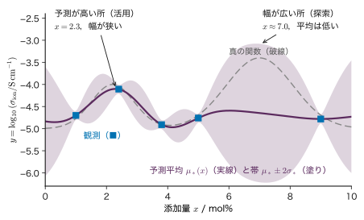
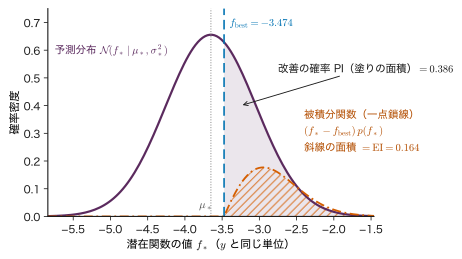
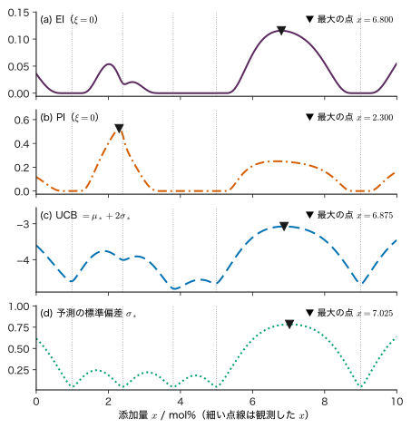
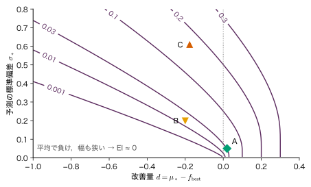
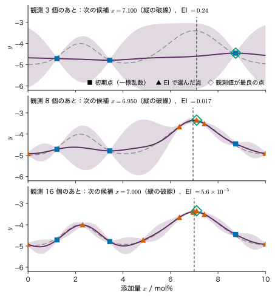
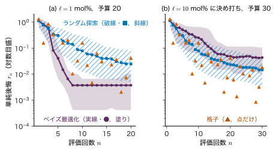

第13章ベイズ最適化と実験計画 — 次にどこを測るか
- 1 回の焼成に 1 日かかる．20 回の実験で最良の条件に近づくには，次の条件をどう選べばよいか．
- 「いちばん良さそうな条件」と「まだよく分からない条件」のどちらを次に試すべきか．その兼ね合いを数で決められるか．
- ベイズ推定とベイズ最適化は名前が似ているが，何が違うのか．
固体電解質に添加物を加えてイオン伝導度を上げたい．添加量を 0〜10 mol% の範囲で変えられるが，試料を作って焼き，伝導度を測るまでに 1 日かかる．0.1 mol% 刻みに全部試せば 101 日である．使える日数が 20 日なら，どの順に試せばよいだろうか．5 点を測った段階で，「今いちばん高かった 2.4 mol% の周りを詰める」のが良いのか，「まだ 1 点も測っていない 6〜8 mol% を見に行く」のが良いのか．前者だけを続けると，近くの小さな山に留まって，奥にある大きな山を見逃すかもしれない．後者だけを続けると，いつまでも良い条件を詰められない．
本章では，この判断を代理モデル（測っていない条件での予測値と，その不確かさの幅を出すモデル．ここではガウス過程）と獲得関数（次に測る価値を数にした関数）で行うベイズ最適化を学ぶ．前半（13.1〜13.3 節）は第12章の導出を読んでいなくても分かるように，予測の平均と帯を図と言葉で説明し，「探索と活用」の兼ね合いを数値例で示す．後半では，期待改善量（EI）を積分から導き（13.4 節），手で計算し（13.5 節），最大化と最小化の符号の約束（13.6 節），観測ノイズの扱い（13.7 節），ランダム探索・格子探索との公平な比べ方（13.8 節），能動学習との目的の違い（13.9 節），実際の材料探索での注意（13.10〜13.11 節）を扱う．
- ベイズ推定（分布を求めること）とベイズ最適化（その分布を使って次の観測点を決めること）の違いを説明できる．
- ベイズ最適化の手順（初期点 → 代理モデル → 獲得関数 → 観測 → 更新）を，予算と止め方を含めて書ける．
- 予測平均と予測の標準偏差の図から，「活用」と「探索」に当たる点を読み取れる．
- 改善確率 PI，期待改善量 EI，上側信頼限界 UCB の式を書き，EI を Gauss 分布の積分から導ける．手で値を計算し，選ばれる点の違いを説明できる．
- 最大化と最小化の符号の約束，観測ノイズがあるときの $f_{\mathrm{best}}$ と推奨点の問題を説明できる．
- 単純後悔を多数の seed の中央値と四分位範囲で比べる理由と，ベイズ最適化がランダム探索に負ける条件を説明できる．
入門ルートで読む節：13.1，13.2，13.3，13.13．13.1〜13.3 節は第10〜12章を読んでいなくても読めるように書いてある．「詳しいルート」の印が付いた節は，初めて読むときは飛ばしてよい．
13.1 高価なブラックボックス関数の最適化
13.1.1 どんな最適化か
第7章では，損失関数 $L(\bm{w})$ の勾配を計算し，その逆向きに少しずつ進んで最小点を探した（第7章 7.2）．勾配が式で書け，1 回の計算が速いので，数千回・数万回の反復ができた．本章の最適化はこれと事情が大きく違う．
- 1 回の評価が高価：「関数の値を 1 つ得る」ことが，試料を作って測る実験 1 回（1 日），あるいは第一原理計算 1 回（数時間）に当たる．
- 勾配が無い：添加量を少し変えたときの伝導度の変化率は式では書けない．数値微分には評価がさらに必要になる．関数の中身が分からないので，ブラックボックス関数と呼ぶ．
- 観測にノイズがある：同じ条件で作り直しても，測定値は少しずつ違う．
- 評価の回数が予算：使える日数・計算時間で回数の上限 $B$ が決まる．
このような問題では，「1 回の評価で何を学べるか」を考えて評価の順番を決める価値がある．評価 1 回の費用に比べれば，次の点を決めるための計算（数秒〜数分）は安いからである．
13.1.2 記号と本章の題材
記号：本章で使う文字
- 入力（実験条件）：$\bm{x}\in\R^{D}$．本章の例では $D=1$ で，添加量 $x$（mol%）．探索する範囲を $\mathcal{X}$ と書く（例：$\mathcal{X}=[0,10]$ mol%）．
- 目的関数：$f(\bm{x})$．観測値は $y=f(\bm{x})+\varepsilon$，$\varepsilon\sim\Normal(0,\sigma^{2})$（$\sigma$ は観測ノイズの標準偏差．$y$ と同じ単位）．本章の既定は最大化：$\bm{x}^{\star}=\argmax_{\bm{x}\in\mathcal{X}}f(\bm{x})$ を探す．最小化は 13.6 節．
- $n$ 回目までのデータ：$\data_n=\{(\bm{x}_i,y_i)\}_{i=1}^{n}$．評価回数の予算 $B$．
- 測っていない点 $\bm{x}$ での予測平均 $\mu_*(\bm{x})$ と予測の標準偏差 $\sigma_*(\bm{x})$（どちらも $\data_n$ を条件とする．$y$ と同じ単位）．
- これまでの最良値 $f_{\mathrm{best}}$（既定は観測値の最大 $\max_i y_i$．13.7 節で見直す）．獲得関数 $a(\bm{x})$．
- 標準 Gauss 分布の累積分布関数 $\Phi(z)=\int_{-\infty}^{z}\Normal(u\mid0,1)\,\dd u$（細字．第8章の計画行列 $\bm{\Phi}$ とは別物），密度 $\Normal(z\mid0,1)=\dfrac{1}{\sqrt{2\pi}}e^{-z^{2}/2}$．
題材は本書で共通に使うデータ C「添加量とイオン伝導度」（教育用の合成データ．実在の物質のデータではない）である．添加量 $x\in[0,10]$ mol%，目的の量は伝導度の常用対数 $y=\log_{10}(\sigma_{\mathrm{ion}}/\mathrm{S\,cm^{-1}})$（無次元）で，真の関数は
\begin{equation} \begin{aligned} f(x)=&{-5.0}\\ &+1.0\,e^{-(x-2.2)^{2}/(2\cdot0.7^{2})}\\ &+1.6\,e^{-(x-7.0)^{2}/(2\cdot1.1^{2})} \end{aligned} \label{eq:13-dataC} \end{equation}とし，観測ノイズの標準偏差を $\sigma=0.05$ とする．$x\approx2.2$ mol% に局所的な極大 $f\approx-4.000$，$x=7.0$ mol% に大域的な最大 $f=-3.400$ がある．探索する人はこの式を知らず，観測値だけを見る，という設定である（ここで $\sigma_{\mathrm{ion}}$ はイオン伝導度で，ノイズの $\sigma$ とは別の量）．
例題13.1 実験の予算と条件の数
1 回の焼成と測定に 1 日かかり，使える日数は 20 日とする．(1) 添加量だけを 0.5 mol% 刻みで $[0,10]$ mol% 全体に試すには何日かかるか．(2) 添加量（5 水準）と焼成温度（5 水準）の 2 つの条件を全組み合わせで試すには何日かかるか．3 つ目の条件（保持時間，5 水準）を足すとどうなるか．(3) この結果から何が言えるか．
解答 (1) 端を含めて $10/0.5+1=21$ 点なので 21 日．予算 20 日を 1 日超える．しかも 0.5 mol% 刻みでは，最大の位置を $\pm0.25$ mol% までしか決められない．
(2) 2 条件では $5\times5=5^{2}=25$ 日，3 条件では $5^{3}=125$ 日．条件の数 $D$ に対して $5^{D}$ と指数関数的に増える．
(3) 条件を等間隔に全部試すやり方は，条件が 1 つでも予算ぎりぎりで，2 つ以上ではすぐに予算を超える．測った結果を見ながら，次に試す条件を1 回ずつ選ぶことに意味がある．これが本章の主題である．
13.2 ベイズ最適化の手順 — 推定してから決める
13.2.1 二つの部品
ベイズ最適化は二つの部品からなる．
- 代理モデル（surrogate model）：これまでのデータ $\data_n$ から，まだ測っていない条件 $\bm{x}$ での値を予測し，予測平均 $\mu_*(\bm{x})$ と予測の標準偏差 $\sigma_*(\bm{x})$ を出す．標準偏差は「どれだけ分からないか」の幅である．本章ではガウス過程（第12章）を使う．
- 獲得関数（acquisition function）$a(\bm{x})$：$\mu_*(\bm{x})$ と $\sigma_*(\bm{x})$ から，「$\bm{x}$ を次に測る価値」を 1 つの数にした関数．これを最大にする $\bm{x}$ を次に測る．
手順を図13.1と定義13.1 にまとめる．
定義13.1 ベイズ最適化の手順（最大化）
- 初期点 $\bm{x}_1,\dots,\bm{x}_{n_0}$ を選んで観測する（一様乱数，等間隔，過去の実験など）．$n\leftarrow n_0$．
- データ $\data_n$ で代理モデルを更新し，探索範囲 $\mathcal{X}$ の各点で $\mu_*(\bm{x})$ と $\sigma_*(\bm{x})$ を計算する．
- 獲得関数を最大にする点 $\bm{x}_{n+1}=\argmax_{\bm{x}\in\mathcal{X}}a(\bm{x})$ を求める．
- $\bm{x}_{n+1}$ で観測して $y_{n+1}$ を得る．$\data_{n+1}=\data_n\cup\{(\bm{x}_{n+1},y_{n+1})\}$，$n\leftarrow n+1$．
- $n\lt B$ なら 2 へ戻る．$n=B$ になったら，推奨点（本章の既定では観測値が最大だった点 $\hat{\bm{x}}_n$）を報告して終える．
13.2.2 ベイズ推定とベイズ最適化の違い
名前は似ているが，二つは役割が違う．
- ベイズ推定（第4章）は，データ $\data$ から分布を求めること．出力は事後分布や事後予測分布であり，「何がどれくらい確からしいか」を答える．データを集める順番には口を出さない．
- ベイズ最適化は，ベイズ推定で得た予測の分布を使って次の観測点を決めること．出力は「次に測る条件」であり，最終的には「最良と思われる条件」である．データの集め方そのものを決める．
図13.1 の ① がベイズ推定，① から ④ を回すこと全体がベイズ最適化である．ベイズ最適化はベイズ推定を部品として使う．ただし，同じ予測の分布から「どこを測るか」を決める規則（獲得関数）は一つではなく，規則の選び方は推定とは別の判断である（13.4 節）．
例題13.2 推定の答えと，次の 1 回の決め方は違う
焼成条件 A は 2 回試して 2 回とも合格，条件 B は 20 回試して 16 回合格だった．合格率 $\mu$ の事前分布はどちらも一様分布 $\mathrm{Beta}(1,1)$ とする．(1) 第4章の結果を使い，A と B の合格率の事後分布と事後平均，事後分布の標準偏差を求めよ．(2) 「事後平均が大きい方」を選ぶとどちらか．(3) 「事後平均 ＋ 1 × 事後標準偏差」が大きい方を選ぶとどちらか．(4) 次の 1 回をどちらで試すかを決めるとき，(2) と (3) の違いは何を意味するか．
解答 (1) 一様事前分布で $N$ 回中 $m$ 回成功なら事後分布は $\mathrm{Beta}(1+m,\,1+N-m)$（第4章 4.4）．A は $\mathrm{Beta}(3,1)$，B は $\mathrm{Beta}(17,5)$．$\mathrm{Beta}(a,b)$ の平均は $a/(a+b)$，分散は $ab/\{(a+b)^{2}(a+b+1)\}$ なので
$$ \begin{aligned} \text{A：}\ &\frac{3}{4}=0.750,\\ &\sqrt{\frac{3\cdot1}{4^{2}\cdot5}}=\sqrt{0.0375}\approx0.194,\\ \text{B：}\ &\frac{17}{22}\approx0.773,\\ &\sqrt{\frac{17\cdot5}{22^{2}\cdot23}}\approx0.087 . \end{aligned} $$(2) 事後平均は B（0.773）の方が A（0.750）より大きいので B．
(3) A は $0.750+0.194=0.944$，B は $0.773+0.087=0.860$ で A．
(4) (1) までがベイズ推定であり，「A は平均 0.75 だがよく分からない，B は平均 0.77 でかなり分かっている」という答えを出す．(2) と (3) はその答えを使った決め方の違いである．(2) は今の知識で最も良さそうな方を選び（活用），(3) は分からなさが大きい A に「実はもっと良いかもしれない」分の点数を足して選ぶ（探索）．同じ推定結果から，決め方によって次に試す条件が変わる．これがベイズ推定とベイズ最適化の違いである．
13.3 探索と活用 — 予測が高い所か，幅が広い所か
13.3.1 予測平均と帯を図で読む
ガウス過程の仕組みは第12章で導くが，ベイズ最適化に必要なのは，その出力の読み方である．データ C を 5 つの添加量 $x=1.0,\ 2.4,\ 3.8,\ 5.0,\ 9.0$ mol% で 1 回ずつ観測し，ガウス過程を当てはめた結果を図13.2 に示す．実線が予測平均 $\mu_*(x)$，塗りの帯が $\mu_*(x)\pm2\sigma_*(x)$ である．

図から次の三つが読み取れる．
- 観測点の近くでは帯が細い．測った所の値はよく分かっている（帯の半幅は約 $2\times0.05=0.1$ まで細くなる）．
- 観測点から離れると帯が広がる．観測点の影響は長さスケール $\ell$（ここでは 1 mol%）程度の距離までしか届かない．6〜8.5 mol% の間には観測が無いので，平均は観測値の平均（約 $-4.65$）のあたりに戻り，帯は最も広い（半幅 $2\times0.78\approx1.6$）．
- 予測平均が最も高いのは $x=2.3$ mol%（$\mu_*=-4.102$）で，帯は細い（$\sigma_*=0.071$）．一方，帯が最も広いのは $x\approx7.0$ mol%（$\mu_*=-4.646$，$\sigma_*=0.783$）である．
真の関数（破線）を見ると，7.0 mol% に大きな山が隠れている．しかし探索する人は真の関数を知らない．5 点のデータから言えるのは，「2.3 mol% は今のところいちばん良いと分かっている」「7 mol% あたりは何も分かっていない（とても良いかもしれないし，悪いかもしれない）」ということだけである．
イメージ：観測 1 点だけのときのガウス過程の予測
観測が 1 点 $(x_1,y_1)$ だけのとき，ガウス過程の予測は短い式で書ける（第12章 12.5 の式で，事前の平均を 0 から定数 $m$ に替えたもの．ここでは結果だけを使う）．データが無いときの予測（事前の予測）を平均 $m$，標準偏差 $\sigma_f$ とし，2 点の「似ている度合い」を
$$ \rho(x)=\exp\!\left[-\frac{(x-x_1)^{2}}{2\ell^{2}}\right]\quad(0\lt\rho\le1) $$とする．$x=x_1$ で $\rho=1$，$x$ が $x_1$ から $\ell$ の数倍離れると $\rho\approx0$ になる．$g=\sigma_f^{2}/(\sigma_f^{2}+\sigma^{2})$（ノイズが小さければ 1 に近い）とおくと，
\begin{equation} \begin{aligned} \mu_*&=m+\rho\,g\,(y_1-m),\\ \sigma_*^{2}&=\sigma_f^{2}\bigl(1-\rho^{2}g\bigr) \end{aligned} \label{eq:13-onepoint} \end{equation}である（$\rho=\rho(x)$）．観測点の近く（$\rho\approx1$）では平均が観測値 $y_1$ に引き寄せられ，分散は小さくなる．遠く（$\rho\approx0$）では平均は $m$，標準偏差は $\sigma_f$ に戻る．データが増えたときも，この「近くは引き寄せられて細く，遠くは事前に戻って広い」という性質は変わらない．
例題13.3 1 点の観測から予測の平均と幅を求める
事前の予測を $m=-4.5$，$\sigma_f=0.8$，長さスケール $\ell=1.0$ mol%，ノイズの標準偏差 $\sigma=0.05$ とする．$x_1=6.0$ mol% で $y_1=-3.90$ を観測した．式 \eqref{eq:13-onepoint} で，$x=6.0,\ 7.0,\ 8.0$ mol% での $\mu_*$ と $\sigma_*$ を求めよ．
解答 $g=0.64/(0.64+0.0025)$ $=0.64/0.6425\approx0.9961$，$y_1-m=0.60$．
- $x=6.0$：$\rho=1$．$\mu_*=-4.5+0.9961\times0.60$ $\approx-3.902$．$\sigma_*^{2}=0.64\,(1-0.9961)$ $\approx0.00249$，$\sigma_*\approx0.050$．
- $x=7.0$：$\rho=e^{-1/2}\approx0.6065$．$\mu_*=-4.5+0.6065\times0.9961\times0.60$ $\approx-4.137$．$\sigma_*^{2}=0.64\,(1-0.6065^{2}\times0.9961)$ $=0.64\times0.6336\approx0.4055$，$\sigma_*\approx0.637$．
- $x=8.0$：$\rho=e^{-2}\approx0.1353$．$\mu_*\approx-4.5+0.081=-4.419$．$\sigma_*^{2}=0.64\,(1-0.0182)\approx0.6283$，$\sigma_*\approx0.793$．
観測点の上では幅がノイズ程度（0.05）まで細くなり，1 mol% 離れると 0.64，2 mol% 離れるとほぼ事前の 0.8 に戻る．平均も，観測値 $-3.90$ から事前の $-4.5$ へ戻っていく．
13.3.2 活用と探索
次にどこを測るかには，二つの極端な方針がある．
- 活用（exploitation）：予測平均 $\mu_*(\bm{x})$ が最も高い所を測る．今の知識で最も良さそうな所を詰める．図13.2 では $x=2.3$ mol%．
- 探索（exploration）：予測の幅 $\sigma_*(\bm{x})$ が最も大きい所を測る．最も分かっていない所を調べる．図13.2 では $x\approx7.0$ mol%．
活用だけでは，2.3 mol% 付近の小さな山（真の値 $-4.00$）を詰め続け，7 mol% の大きな山（$-3.40$）を見つけられない．探索だけでは，分からない所を順に埋めるだけで，良い所を詰めない（13.9 節の能動学習に近い）．獲得関数は，この二つを 1 つの数にまとめて兼ね合いをとる．最も簡単な形は，第1章 1.5 節でも見た
\begin{equation} \mathrm{UCB}(\bm{x})=\mu_*(\bm{x})+\kappa\,\sigma_*(\bm{x}) \label{eq:13-ucb} \end{equation}（$\kappa\ge0$）で，$\kappa=0$ なら活用だけ，$\kappa$ が大きいほど探索寄りになる（UCB は upper confidence bound，上側信頼限界の略．$\kappa$ は第7章 7.2 の条件数とは別の量である）．
例題13.4 何倍の幅を買えば選ぶ点が変わるか
図13.2 の予測で，候補 P：$x=2.3$ mol%（$\mu_*=-4.102$，$\sigma_*=0.071$）と候補 Q：$x=7.0$ mol%（$\mu_*=-4.646$，$\sigma_*=0.783$）を比べる．(1) $\kappa=0$ と $\kappa=2$ のとき，式 \eqref{eq:13-ucb} の値が大きいのはどちらか．(2) 選ぶ点が P から Q に変わる $\kappa$ の値を求めよ．
解答 (1) $\kappa=0$：P は $-4.102$，Q は $-4.646$ で P．$\kappa=2$：P は $-4.102+2\times0.071=-3.960$，Q は $-4.646+2\times0.783=-3.080$ で Q．
(2) 二つが等しくなる $\kappa$ は
$\kappa\gt0.76$ なら Q（探索），$\kappa\lt0.76$ なら P（活用）を選ぶ．予測平均の差 0.544 を，幅の差 0.712 の何倍で埋め合わせるか，という比である．$\kappa$ の選び方が結果を変えるので，13.4 節では「改善」の確率や期待値から選ぶ方法も考える．
13.4 獲得関数 — PI，EI，UCB詳しいルート
13.4.1 代理モデルの予測（結果の再掲）
ガウス過程 $f\sim\GP(m,k)$ で，平均関数を定数 $m$，共分散関数を RBF カーネル $k(\bm{x},\bm{x}')=\sigma_f^{2}\exp\!\bigl(-\norm{\bm{x}-\bm{x}'}^{2}/(2\ell^{2})\bigr)$ とする．$n$ 個の観測 $\bm{y}\in\R^{n}$ から，テスト入力 $\bm{x}_*$ での潜在関数 $f_*=f(\bm{x}_*)$ の予測分布は $p(f_*\mid\data_n)=\Normal(f_*\mid\mu_*,\sigma_*^{2})$ で（第12章 12.4），
\begin{equation} \begin{aligned} \mu_*&=m+\bm{k}_*^{\tp}\bm{K}_y^{-1}(\bm{y}-m\bm{1}),\\ \sigma_*^{2}&=k(\bm{x}_*,\bm{x}_*)-\bm{k}_*^{\tp}\bm{K}_y^{-1}\bm{k}_* . \end{aligned} \label{eq:13-gp} \end{equation}ここで $\bm{K}_y=\bm{K}+\sigma^{2}\bm{I}\in\R^{n\times n}$（$K_{ij}=k(\bm{x}_i,\bm{x}_j)$），$\bm{k}_*\in\R^{n}$（第 $i$ 成分 $k(\bm{x}_i,\bm{x}_*)$），$\bm{1}\in\R^{n}$ は成分がすべて 1 のベクトルである．獲得関数に使うのは潜在関数 $f_*$ の予測分布である（観測値 $y_*$ の予測分散 $\sigma_*^{2}+\sigma^{2}$ ではない）．知りたいのは「その条件の真の値がどれだけ良いか」であって，次の 1 回の測定値のばらつきではないからである．実際の計算では逆行列を作らず，$\bm{K}_y$ の Cholesky 分解を使う（第12章 12.8）．
13.4.2 改善量と改善確率 PI
$\bm{x}$ を測ったとき，真の値 $f=f(\bm{x})$ がこれまでの最良値 $f_{\mathrm{best}}$ をどれだけ上回るかを改善量という．下回れば改善は 0 なので，
\begin{equation} I=\max\bigl(f-f_{\mathrm{best}}-\xi,\ 0\bigr) \label{eq:13-improve} \end{equation}と定める（$f=f(\bm{x})$）．$\xi\ge0$ は「少なくともこれだけは上回ってほしい」余裕で，大きくすると探索寄りになる（既定は $\xi=0$）．$f$ は分からないので $I$ は確率変数であり，その分布は $f\sim\Normal(\mu_*,\sigma_*^{2})$ から決まる．以下，$\bm{x}$ を固定し，引数を省いて $\mu_*=\mu_*(\bm{x})$，$\sigma_*=\sigma_*(\bm{x})\gt0$ と書く．
\begin{equation} d=\mu_*-f_{\mathrm{best}}-\xi,\quad z=\frac{d}{\sigma_*} \label{eq:13-dz} \end{equation}とおく．$d$ は「平均で見た改善量」（負なら平均では負けている），$z$ はそれを予測の標準偏差で測ったものである．$d$ はシミュレーターの表示に合わせた文字で，第8章などの多項式の次数 $d$ とは別の量である（入力の次元は $D$ と書く）．
定義13.2 改善確率（PI）
$\bm{x}$ を測ったとき改善が起こる確率 $P\bigl(f\gt f_{\mathrm{best}}+\xi\mid\data_n\bigr)$ を改善確率（probability of improvement，PI）という．Gauss 分布の予測のもとでは次の式になる．
最後の等号は，$u=(f-\mu_*)/\sigma_*$ が標準 Gauss 分布に従うことから出る：$f\gt f_{\mathrm{best}}+\xi \iff u\gt-z$ であり，$P(u\gt-z)=1-\Phi(-z)=\Phi(z)$（Gauss 分布の対称性）．PI は改善の大きさを見ない．$f_{\mathrm{best}}$ のすぐ近くで「ほぼ確実にわずかに上回る」点（$d$ がわずかに正，$\sigma_*$ が小さい）に高い値を与えるので，$\xi=0$ では最良点の周りばかりを測りがちである（図13.4 (b)）．
13.4.3 期待改善量 EI を積分から導く
改善の大きさまで含めて期待値をとったものが期待改善量（expected improvement）である．
定義13.3 期待改善量（EI）
$\mathrm{EI}(\bm{x})=\Ex\bigl[I(\bm{x})\mid\data_n\bigr]$，すなわち改善量 \eqref{eq:13-improve} の予測分布のもとでの期待値．
導出：EI の閉じた式
期待値の定義（大学数学 第14章 14.4）より，被積分関数が 0 になる $f\le f_{\mathrm{best}}+\xi$ の部分を除くと
$$ \begin{aligned} \mathrm{EI}=\int_{f_{\mathrm{best}}+\xi}^{\infty}&\bigl(f-f_{\mathrm{best}}-\xi\bigr)\\ &\times\Normal(f\mid\mu_*,\sigma_*^{2})\,\dd f . \end{aligned} $$$u=(f-\mu_*)/\sigma_*$ と変数変換する．$f=\mu_*+\sigma_*u$，$\dd f=\sigma_*\,\dd u$，$\Normal(f\mid\mu_*,\sigma_*^{2})\,\dd f=\Normal(u\mid0,1)\,\dd u$ である．被積分関数の改善量は
$$ \begin{aligned} f-f_{\mathrm{best}}-\xi&=\mu_*+\sigma_*u-f_{\mathrm{best}}-\xi\\ &=d+\sigma_*u , \end{aligned} $$積分の下端は $f=f_{\mathrm{best}}+\xi$，すなわち $u=(f_{\mathrm{best}}+\xi-\mu_*)/\sigma_*$ $=-d/\sigma_*=-z$ になる．よって
$$ \begin{aligned} \mathrm{EI}&=\int_{-z}^{\infty}(d+\sigma_*u)\,\Normal(u\mid0,1)\,\dd u\\ &=d\int_{-z}^{\infty}\Normal(u\mid0,1)\,\dd u\\ &\quad+\sigma_*\int_{-z}^{\infty}u\,\Normal(u\mid0,1)\,\dd u . \end{aligned} $$第 1 項の積分は $P(u\gt-z)=\Phi(z)$ である（PI と同じ）．第 2 項は，$\Normal(u\mid0,1)=\frac{1}{\sqrt{2\pi}}e^{-u^{2}/2}$ を微分すると
$$ \diff{}{u}\Normal(u\mid0,1)=-u\,\Normal(u\mid0,1) $$なので，$u\,\Normal(u\mid0,1)$ の原始関数は $-\Normal(u\mid0,1)$ である．したがって
$$ \begin{aligned} &\int_{-z}^{\infty}u\,\Normal(u\mid0,1)\,\dd u\\ &=\Bigl[-\Normal(u\mid0,1)\Bigr]_{-z}^{\infty}\\ &=0-\bigl(-\Normal(-z\mid0,1)\bigr)\\ &=\Normal(z\mid0,1) . \end{aligned} $$最後に密度が偶関数であること $\Normal(-z\mid0,1)=\Normal(z\mid0,1)$ を使った．二つを合わせて式 \eqref{eq:13-ei} を得る．
（導出終わり）
図13.3 に積分の意味を示す．予測分布のうち $f_{\mathrm{best}}$ を超える部分の面積が PI，超えた量を掛けて積分した面積が EI である．第 1 項 $d\,\Phi(z)$ は「平均で見た改善量 × 改善の確率」，第 2 項 $\sigma_*\Normal(z\mid0,1)$ は「幅がもたらす上振れの分」で，$\sigma_*$ が大きいほど大きい．EI はこの二つの和として，活用（$d$ が大きい）と探索（$\sigma_*$ が大きい）の両方に点数を与える．

13.4.4 幅が 0 になる極限
観測点の真上のように $\sigma_*\to0$ になると，$z=d/\sigma_*$ は $d\gt0$ なら $+\infty$，$d\lt0$ なら $-\infty$ へ行く．
- $d\gt0$：$\Phi(z)\to1$，$\sigma_*\Normal(z\mid0,1)\to0$ なので $\mathrm{EI}\to d$．
- $d\lt0$：$\Phi(z)\to0$，$\sigma_*\Normal(z\mid0,1)\to0$ なので $\mathrm{EI}\to0$．
- $d=0$：$z=0$ で $\mathrm{EI}=\sigma_*\Normal(0\mid0,1)=\sigma_*/\sqrt{2\pi}\to0$．
まとめると
\begin{equation} \lim_{\sigma_*\to0}\mathrm{EI}=\max(d,\ 0) \label{eq:13-ei-limit} \end{equation}である（$d=\mu_*-f_{\mathrm{best}}-\xi$）．幅が無いとき，期待される改善は「確実に分かっている改善量」だけになる．観測点の上では $\mu_*$ はその点の観測値の近くにあり，ふつう $f_{\mathrm{best}}$ を超えないので EI はほぼ 0 になる．同じ点を何度も測らせない仕組みが，式の中に入っている（ただしノイズがあると話が変わる．13.7 節）．計算機で扱うときは，$\sigma_*=0$（または丸めで負になって 0 に切った値）のときに式 \eqref{eq:13-ei} の $z=d/\sigma_*$ で割り算をしないよう，式 \eqref{eq:13-ei-limit} に切り替える．
13.4.5 UCB と Thompson サンプリング
13.3 節の UCB \eqref{eq:13-ucb} は，$\mu_*+\kappa\sigma_*$ が予測分布 $\Normal(f_*\mid\mu_*,\sigma_*^{2})$ の上側の分位点であること（$\kappa=2$ なら下から約 97.7 % の点．演習13.7）から，「楽観的に見積もった値」と読める．Srinivas ら（2010）は，$\kappa$ を評価回数とともにゆっくり大きくする選び方で，累積の後悔に関する理論的な上界を示した．実用上は $\kappa=2$ 前後に固定することも多い．
もう一つの代表は Thompson サンプリングである．代理モデルの予測分布（事後分布）から関数を 1 本だけ引き，その関数を最大にする点を次に測る．幅の広い所では引いた関数が大きく振れるので，そこが選ばれることもある．探索と活用の兼ね合いが乱数を通して自然に入る．起源は Thompson（1933）の二者択一の問題にさかのぼり，材料探索のライブラリー COMBO（Ueno ら，2016）にも使われている．

例題13.5 PI と EI が選ぶ点の違い
$f_{\mathrm{best}}=-3.47$，$\xi=0$ とする．候補 A は $\mu_*=-3.45$，$\sigma_*=0.02$（最良点のすぐ隣），候補 B は $\mu_*=-3.80$，$\sigma_*=0.40$（観測の少ない所）である．PI と EI を計算し，それぞれがどちらを選ぶかを答えよ．$\Phi(1.000)=0.8413$，$\Normal(1.000\mid0,1)=0.2420$，$\Phi(-0.825)=0.2047$，$\Normal(0.825\mid0,1)=0.2839$ を使ってよい．
解答 A：$d=-3.45+3.47=0.02$，$z=0.02/0.02=1.000$．$\mathrm{PI}=0.841$．
$$ \begin{aligned} \mathrm{EI}_{\mathrm A}&=0.02\times0.8413+0.02\times0.2420\\ &=0.0168+0.0048=0.0217 . \end{aligned} $$B：$d=-3.80+3.47=-0.33$，$z=-0.33/0.40=-0.825$．$\mathrm{PI}=0.205$．
$$ \begin{aligned} \mathrm{EI}_{\mathrm B}&=-0.33\times0.2047+0.40\times0.2839\\ &=-0.0676+0.1135=0.0460 . \end{aligned} $$PI は A（0.841 対 0.205），EI は B（0.0460 対 0.0217）を選ぶ．A は改善する確率は高いが，改善してもせいぜい数百分の一である．B は改善する確率は 2 割だが，改善するときの量が大きい．EI はこの大きさまで勘定に入れる．
13.5 手計算 — 選ばれる点は獲得関数で変わる詳しいルート
EI の値は $d$ と $\sigma_*$ の 2 つだけで決まる．図13.5 は EI の等高線を $(d,\sigma_*)$ の平面に描いたものである．右（平均で勝っている）にも上（幅が広い）にも EI は大きくなる．平均で負けていても（$d\lt0$），幅が十分に広ければ EI は大きい．逆に $d\lt0$ で幅が狭い左下の領域では EI はほぼ 0 である．EI が $d$ と $\sigma_*$ のどちらについても増加関数であることは，演習13.3 で微分して確かめる．

例題13.6 EI と UCB で選ばれる点が違う
$f_{\mathrm{best}}=-3.50$，$\xi=0$，$\kappa=2$ とする．候補 A：$\mu_*=-3.48$，$\sigma_*=0.05$．候補 B：$\mu_*=-3.70$，$\sigma_*=0.20$．(1) 両者の EI を求めよ．(2) 両者の UCB を求めよ．(3) それぞれの獲得関数はどちらを選ぶか．違いの理由を述べよ．数表の値 $\Phi(0.4)=0.6554$，$\Normal(0.4\mid0,1)=0.3683$，$\Phi(-1)=0.1587$，$\Normal(1\mid0,1)=0.2420$ を使ってよい．
解答 (1) A：$d=-3.48+3.50=0.02$，$z=0.02/0.05=0.4$．
$$ \begin{aligned} \mathrm{EI}_{\mathrm A}&=0.02\times0.6554+0.05\times0.3683\\ &=0.01311+0.01841=0.0315 . \end{aligned} $$B：$d=-3.70+3.50=-0.20$，$z=-0.20/0.20=-1$．
$$ \begin{aligned} \mathrm{EI}_{\mathrm B}&=-0.20\times0.1587+0.20\times0.2420\\ &=-0.03173+0.04839=0.0167 . \end{aligned} $$(2) $\mathrm{UCB}_{\mathrm A}=-3.48+2\times0.05=-3.38$，$\mathrm{UCB}_{\mathrm B}=-3.70+2\times0.20=-3.30$．
(3) EI は A（0.0315 対 0.0167），UCB は B（$-3.30$ 対 $-3.38$）を選ぶ．UCB は「$2\sigma_*$ だけ楽観した値」の大小で決めるので，B の楽観値 $-3.30$ が A の楽観値を上回る．EI は $f_{\mathrm{best}}$ を超える部分だけを勘定するので，B が改善するのは $1\sigma_*$ 以上の上振れのとき（確率 0.159）に限られることを重く見る．UCB の選ぶ点は $\kappa$ で変わり，二つの UCB が等しくなるのは $\kappa=(-3.48+3.70)/(0.20-0.05)\approx1.47$ のときである．$\kappa\lt1.47$ なら UCB も A を選ぶ．
手で計算した値は，次のシミュレーターの「いまの数値を式に入れると（次の候補で）」の欄の値と同じ手順で確かめられる．装置は 1 次元の入力で，獲得関数の最大化を 401 点の格子（刻み 0.025 mol%）で行い，平均関数を観測値の平均にするなどの簡略化をしている（装置のページの「簡略化している点」）．
シミュレーター13.1 ベイズ最適化を 1 回ずつ進める
データ C（教育用の合成データ）を相手に，代理モデル（ガウス過程）の更新と獲得関数による次の点の選択を 1 回ずつ進め，EI・UCB・PI の選ぶ点の違い，最大化と最小化の対応，観測ノイズによる推奨点の揺れを確かめる装置である．
操作と観察
- 開いた直後の既定（目的「最大化（y を最大に）」，獲得関数 EI，$\xi=0$，初期点 3 個，予算 20，$\ell=1.00$ mol%，乱数の seed 20261112）で「次の 1 点を観測」を 3 回押す → 初期点が $x=9.314,\ 7.207,\ 1.992$ mol%（観測値 $-4.828,\ -3.474,\ -4.021$）に置かれ，次の候補が $x=6.275$ になる．「いまの数値を式に入れると（次の候補で）」で $\mu_*=-3.6509$，$\sigma_*=0.6083$，$f_{\mathrm{best}}=-3.4741$，改善量 $d=-0.1768$，$z=-0.291$，EI $=0.1644$ を読み，式 \eqref{eq:13-ei} に入れて同じ値になることを確かめる（図13.3 と同じ数値）．
- 観測はそのままで獲得関数を「UCB（上側信頼限界）」に切り替える → 次の候補が $x=5.850$（$\mu_*=-3.8239$，$\sigma_*=0.7333$，UCB $=-2.3574$）に変わる．「PI（改善確率）」にすると $x=7.100$（$\sigma_*=0.0969$，PI $=0.5447$）になる．PI は最良点 7.207 のすぐ隣を，UCB は帯の広い所を選ぶ．式 \eqref{eq:13-pi}，\eqref{eq:13-ucb} と例題13.5，13.6 と比べる．
- 獲得関数を EI に戻し，「次の 1 点を観測」をさらに 7 回押して観測を 10 個にする → 履歴の表で $x$ が 6.275，0.000，3.625，6.925，6.900，5.000，6.900 と，帯の広い所（探索）と 7 mol% 付近（活用）が交互に選ばれる．読み出しの単純後悔は 7 回目に 0.00371 に下がるが，10 回目に 0.00660 へ増える（13.7 節）．
- そのまま「fbest の定義」を「観測点での事後平均の最良」に切り替える → $f_{\mathrm{best}}$ が $-3.3908$ から $-3.4166$ に変わり，次の候補が 6.900 から 6.925 に変わる．さらに観測値の最良に戻し，$\xi$ を 0.10 にすると，候補が $x=1.225$ に跳ぶ．
- 目的を「最小化（−y を最小に）」に切り替えて「やり直す」を押し，「次の 1 点を観測」を 10 回押す → 観測する $x$ の列が手順 3 と同じになる（13.6 節）．
操作後の問い
- 手順 2 で PI が $x=7.100$ を選んだのはなぜか．PI の値が 0.5 を少し超える理由も述べよ．
答えの例
PI は改善の確率だけを見るので，$f_{\mathrm{best}}=-3.4741$ を少しでも上回りそうな点を好む．7.207 mol% で観測値 $-3.474$ を得ているので，その近くの $x=7.100$ では予測平均が $-3.4632$ と $f_{\mathrm{best}}$ をわずかに上回り（$d=0.011$），$z=d/\sigma_*\approx0.11$ なので $\Phi(z)\approx0.545$ となる．改善量そのものは小さく，PI は「確実だが小さい改善」に偏る．
- 手順 3 で単純後悔が増えたのはなぜか．
答えの例
推奨点を「観測値が最大の点」としているからである．10 回目に $x=6.900$ で観測値 $-3.3908$ を得た．これはそれまでの最良の観測値（6.925 で $-3.3964$）を上回ったが，真の値は $f(6.900)=-3.4066$ で，6.925 の真の値 $-3.4037$ より低い．ノイズで高く出た点が推奨点になったため，真の値で測る単純後悔が増えた．
- 手順 4 で $\xi=0.10$ にすると，なぜ 7 mol% 付近ではなく 1.225 mol% が選ばれるのか．
答えの例
$\xi=0.10$ は「$f_{\mathrm{best}}$ より 0.10 以上良くならなければ改善と数えない」という条件である．7 mol% 付近は観測が多く $\sigma_*$ が 0.03 程度しかないので，0.10 も上回る見込みはほとんど無い．観測の少ない 1.2 mol% 付近は $\sigma_*$ が大きく，大きく上振れする確率が残るので EI が相対的に大きくなる．$\xi$ を大きくすると探索寄りになる．
13.6 最大化と最小化の符号の約束詳しいルート
本章の既定は最大化だが，粒径・損失・欠陥密度・計算のエネルギーのように「小さいほど良い」量も多い．最小化の問題 $\min_{\bm{x}}g(\bm{x})$ は，$f=-g$ の最大化と同じ問題である．しかし文献やソフトウェアは最小化の形で獲得関数を書くことが多く，符号を取り違えやすい．対応を表13.1 にまとめる．
| 量 | 最大化（本章の既定） | 最小化 |
|---|---|---|
| $f_{\mathrm{best}}$ | これまでの最大 | これまでの最小 |
| 改善量 $d$ | $\mu_*-f_{\mathrm{best}}-\xi$ | $f_{\mathrm{best}}-\mu_*-\xi$ |
| PI | $\Phi(z)$，$z=d/\sigma_*$（どちらも最大の点を選ぶ） | |
| EI | $d\,\Phi(z)+\sigma_*\Normal(z\mid0,1)$（どちらも最大の点を選ぶ） | |
| 信頼限界 | UCB $=\mu_*+\kappa\sigma_*$ を最大にする | LCB $=\mu_*-\kappa\sigma_*$ を最小にする |
最小化の改善量が $f_{\mathrm{best}}-\mu_*-\xi$ になることは，$g$ の最小化を $f=-g$ の最大化に直すと分かる．$f$ の予測平均は $-\mu_*$，予測の標準偏差は $\sigma_*$ のまま（定数倍 $-1$ は標準偏差の大きさを変えない），$f$ のこれまでの最大は $-f_{\mathrm{best}}$ なので，最大化の改善量は
$$ (-\mu_*)-(-f_{\mathrm{best}})-\xi=f_{\mathrm{best}}-\mu_*-\xi $$となり，表の最小化の欄と一致する．EI・PI は改善量と $\sigma_*$ だけで決まるので値も同じであり，選ばれる点も同じになる．LCB は UCB の符号を変えたもの（$-\mathrm{UCB}_f=\mu_*-\kappa\sigma_*$）なので，UCB の最大点は LCB の最小点に等しい．ガウス過程の予測平均は観測値 $\bm{y}$ について線形（式 \eqref{eq:13-gp}）なので，$\bm{y}$ の符号を変えて当てはめ直しても $\mu_*$ の符号が変わるだけで，$\sigma_*$ は $\bm{y}$ に依らない．シミュレーター13.1 の手順 5 で観測点の列が完全に一致するのはこのためである．
例題13.7 最小化の EI と LCB
ある焼結体の平均粒径 $g$（μm）を小さくしたい．これまでの最小は $f_{\mathrm{best}}=2.10$ μm で，候補点での予測は $\mu_*=2.20$ μm，$\sigma_*=0.15$ μm である（教育用の数値）．$\xi=0$，$\kappa=2$ とする．(1) 最小化の式で EI を求めよ．(2) $f=-g$ の最大化に直して EI を計算し，一致することを確かめよ．(3) LCB を求めよ．$\Phi(-0.667)=0.2525$，$\Normal(0.667\mid0,1)=0.3194$ を使ってよい．
解答 (1) 改善量 $d=f_{\mathrm{best}}-\mu_*=2.10-2.20=-0.10$ μm，$z=-0.10/0.15=-0.667$．
$$ \begin{aligned} \mathrm{EI}&=-0.10\times0.2525+0.15\times0.3194\\ &=-0.0253+0.0479=0.0227\ \mathrm{\mu m}. \end{aligned} $$(2) $f=-g$ では予測平均 $-2.20$，これまでの最大 $-2.10$，標準偏差 0.15．改善量は $-2.20-(-2.10)=-0.10$ で (1) と同じなので，EI も $0.0227$ μm で一致する．
(3) $\mathrm{LCB}=2.20-2\times0.15=1.90$ μm．最小化では，楽観的な見積もりは「小さい側」の限界であり，これが小さい点を選ぶ．EI の単位は目的関数と同じ（μm）であることにも注意する．
13.7 観測ノイズがある場合詳しいルート
13.7.1 運の良いノイズに引きずられる
ここまで $f_{\mathrm{best}}$ を「観測値の最大」としてきた．観測にノイズがあると，これには二つの問題がある．
- 基準が上に偏る：同じくらい良い点をたくさん測るほど，その中にノイズで高く出た値が混じり，観測値の最大は真の最大より上に出やすい．基準が高すぎると，EI・PI はどこでも小さくなり，探索が鈍る．
- 推奨点が揺れる：「観測値が最大の点」を推奨すると，ノイズで高く出た点が選ばれる．真の値ではほかの点の方が良いことがある．
図13.6 は，numpy の乱数で別に 1 回実行したベイズ最適化の途中経過である（シミュレーターとは乱数の列が違うので点の位置は違う）．4 回目に $x=7.100$ mol% で観測値 $-3.340$（真の値 $-3.407$．ノイズ $+0.067$，標準偏差の約 1.3 倍）を得たので，以後この値が $f_{\mathrm{best}}$ と推奨点に居座る．その後 $x=6.95\sim7.0$ を何度も測り，真の最大 $-3.400$ にほぼ等しい点を見つけているのに，それらの観測値（$-3.37$〜$-3.47$）は $-3.340$ を超えない．推奨点は 7.100 のままで，単純後悔（13.8 節）は 20 回目まで 0.0066 から下がらない．

13.7.2 対処
- $f_{\mathrm{best}}$ を事後平均の最大にする：観測した点での予測平均 $\mu_*(\bm{x}_i)$ の最大を基準にする．$\mu_*$ はノイズをならした値なので，運の良い 1 回に引きずられにくい（シミュレーター13.1 の手順 4）．推奨点も同様に「予測平均が最大の観測点」にできる．
- ノイズを正しく見積もる：モデルのノイズ $\sigma$ を小さくしすぎると，代理モデルが観測値をそのまま通ろうとして平均がノイズを拾う．$\sigma$ は繰り返し測定や周辺尤度（証拠，エビデンスとも呼ぶ．第12章 12.7）で決める．
- ノイズを考えた獲得関数を使う：観測値ではなく潜在関数の改善を考える EI の一般化や，次の 1 回でどれだけ推奨点が良くなるかを測る knowledge gradient などがある（Frazier の解説，2018）．
13.7.3 同じ点を繰り返し測る意味
ノイズの無い問題では，同じ点を 2 度測っても何も学ばない（EI はほぼ 0 になる．13.4.4 項）．ノイズがあると，同じ点の繰り返しには意味がある．$n$ 回の平均の標準偏差は $\sigma/\sqrt{n}$ に下がるので（第2章 2.8），近い値の 2 つの条件のどちらが良いかを見分けられる．ガウス過程は同じ $x$ の観測を自動で平均するように働き，その点の $\sigma_*$ を下げる．シミュレーター13.1 で $x=6.900$ や $7.125$ が繰り返し選ばれるのはこのためである．
例題13.8 近い 2 条件を見分けるには何回ずつ測るか
2 つの条件の真の値の差が $0.03$ で，各測定のノイズの標準偏差が $\sigma=0.05$（独立）とする．(1) それぞれ 1 回ずつ測ったとき，観測値の大小が真の大小と逆になる確率を求めよ．(2) それぞれ $n$ 回ずつ測って平均を比べるとき，逆になる確率を 5 % 未満にする最小の $n$ を求めよ．$\Phi(-0.424)=0.336$，$\Phi(-1.645)=0.05$ を使ってよい．
解答 (1) 観測値の差 $\Delta=y_{\mathrm A}-y_{\mathrm B}$ は，真の差 0.03 を平均に持ち，分散 $\sigma^{2}+\sigma^{2}=2\times0.05^{2}$ の Gauss 分布に従う（独立な Gauss 変数の差．第2章 2.5）．標準偏差は $\sqrt{2}\times0.05\approx0.0707$．逆になるのは $\Delta\lt0$ のときで
$$ \begin{aligned} P(\Delta\lt0)&=\Phi\!\left(\frac{0-0.03}{0.0707}\right)\\ &=\Phi(-0.424)\approx0.336 . \end{aligned} $$3 回に 1 回は大小を取り違える．
(2) 平均どうしの差の標準偏差は $0.0707/\sqrt{n}$．$P\lt0.05$ には $0.03\sqrt{n}/0.0707\gt1.645$，すなわち
最小の $n$ は 16 回ずつ（計 32 回）である．真の差がノイズの標準偏差より小さいと，見分けるのに予算の多くを使う．差が実用上どうでもよい大きさなら，見分けにこだわらないのも一つの判断である．
13.8 ランダム探索・格子探索との比較詳しいルート
13.8.1 単純後悔
最適化の方法の良し悪しは，予算を使い切ったときに報告した推奨点が，真の最大にどれだけ近いかで測る．
定義13.4 単純後悔
$n$ 回目までの観測で観測値が最大だった点を推奨点 $\hat{\bm{x}}_n$ とし，
\begin{equation} r_n=f(\bm{x}^{\star})-f(\hat{\bm{x}}_n) \label{eq:13-regret} \end{equation}を単純後悔（simple regret）という（$r_n\ge0$）．$f(\bm{x}^{\star})$ は真の最大値，$f(\hat{\bm{x}}_n)$ は推奨点での真の値（観測値ではない）．
データ C では $f(\bm{x}^{\star})=-3.400$ である．$r_n$ は真の関数を知っている場合にだけ計算できる．合成データで方法を比べるための量であって，実際の実験の最中には分からない．推奨点を「観測値の最大」で選ぶので，13.7 節のとおり，評価を重ねても $r_n$ が増えることがある．
13.8.2 1 回の勝ち負けではなく分布で比べる
ベイズ最適化の結果は，初期点の乱数と観測ノイズで大きく変わる．ある seed で 1 回ずつ実行してベイズ最適化がランダム探索に勝っても，別の seed では負けるかもしれない．そこで多数の seed で繰り返し，評価回数 $n$ ごとの $r_n$ の中央値と四分位範囲（25〜75 % の範囲）で比べる．平均ではなく中央値を使うのは，$r_n$ がまれに大きくなる（小さな山に留まった場合など）裾の重い分布をしており，平均がその少数の回に引きずられるからである．

default_rng で，ベイズ最適化は seed $20261112+r$，ランダム探索は $20261112+100000+r$，格子のノイズは $20261112+200000+r$．| 設定 | 計算 | ベイズ最適化 | ランダム探索 | 格子 | BO の方が小さい割合 |
|---|---|---|---|---|---|
| $\ell=1$，予算 20 | 図13.7 (a) | 0.0037 [0.00041, 0.010] | 0.025 [0.0049, 0.082] | 0.041 | 82 % |
| シミュレーター13.2 | 0.0037 [0.00041, 0.010] | 0.031 [0.0053, 0.088] | 0.041 | 81.5 % | |
| $\ell=10$ 決め打ち，予算 30 | 図13.7 (b) | 0.043 [0.010, 0.11] | 0.015 [0.0030, 0.044] | 0.018 | 30 % |
| シミュレーター13.2 | 0.049 [0.012, 0.13] | 0.019 [0.0032, 0.054] | 0.018 | 36.5 % |
- 代理モデルが合っていれば，ベイズ最適化は少ない回数で真の最大の近くに行く．$\ell=1$ mol% は山の幅（0.7 mol% と 1.1 mol%）と同じ程度で，2 つの山を表せる．中央値は 8 回目ごろに 0.0037 まで下がり，20 回目のランダム探索（0.025〜0.031）より 1 桁近く小さい．
- それでも毎回勝つわけではない．同じ繰り返しどうしで比べてベイズ最適化の方が小さかったのは約 8 割である．
- 中央値が 0.0037 で止まるのは，獲得関数を 0.025 mol% 刻みの格子で最大にしているためと，ノイズのため推奨点が $x=6.925$（真の値 $-3.4037$）付近に決まりやすいためである．後悔が 0 に向かって下がり続けるわけではない．装置で予算を 40 にすると，40 回目の中央値は 0.0066 とむしろ大きくなる（シミュレーター13.2 の手順 4）．
- 格子は予算に合わせて配置を決めるので，予算 $n$ ごとに別の実験である．$n=5,15,25$ では $x=7.0$ をちょうど測るので後悔がほぼ 0 になり，▲ が大きく上下する．格子が 1 次元で強いのは，最大の位置が格子点の近くにある幸運にも依る．
13.8.3 ベイズ最適化が負ける場合
図13.7 (b) は，長さスケールを $\ell=10$ mol% に決め打ちした場合である．$\ell$ が山の幅より 1 桁長いので，代理モデルは 2 つの山を表せず，なだらかな 1 つの山しか描けない．しかも観測の間を「なめらかにつながっている」と思い込むので $\sigma_*$ を小さく見積もり，誤った場所の近くで探索をやめてしまう．中央値はランダム探索の 2.5〜3 倍になり，同じ繰り返しどうしで勝ったのは 3〜4 割（図 30 %，装置 36.5 %）にすぎない．ランダム探索にはモデルの誤りが無いので，このような負け方をしない．$\ell$ を毎回周辺尤度で選べば（第12章 12.7），装置では中央値 0.00165 と，決め打ちの $\ell=1$ よりさらに良くなる．ベイズ最適化の強さは代理モデルの仮定の良さに依る．
例題13.9 ランダム探索が山頂の近くに当たる確率
データ C で，ランダム探索（$[0,10]$ mol% の一様乱数）で $x$ を選ぶ．(1) 1 回の評価が $7.0\pm0.25$ mol% に入る確率を求めよ．(2) 20 回の評価のうち少なくとも 1 回がこの範囲に入る確率を求めよ．(3) この範囲の端 $x=7.25$ mol% での後悔 $f(7.0)-f(7.25)$ を求めよ．$e^{-0.02583}=0.97450$ を使ってよい．
解答 (1) 幅 0.5 mol% の区間に入る確率は $0.5/10=0.05$．
(2) 各回は独立なので，20 回とも外れる確率は $0.95^{20}\approx0.358$．少なくとも 1 回入る確率は $1-0.358=0.642$．
(3) 式 \eqref{eq:13-dataC} で，$x=7.25$ では第 1 の山の項は $\exp[-(5.05)^{2}/0.98]\approx0$ と無視できる．第 2 の山の項は
$x=7.0$ ではこの項が $1.6$ なので，後悔は $1.6-1.5592\approx0.041$ である．ランダム探索の 20 回目の中央値（0.025〜0.031）がこの程度になるのは，「20 回のうち 1 回くらいは山頂から 0.25 mol% 以内に当たる」ことの反映である．
シミュレーター13.2 ランダム探索・格子との比較
同じ予算で，ベイズ最適化・ランダム探索・等間隔の格子を多数の seed で繰り返し，単純後悔 \eqref{eq:13-regret} の中央値と四分位範囲で比べる装置である．
操作と観察
- 既定（予算 $B=20$，繰り返し数 200，EI，$\xi=0$，初期点 3，$\ell=1.00$ mol% 固定，seed 20261112）で「実行」を押す → 20 回目の中央値 [四分位] がベイズ最適化 0.00371 [0.000413, 0.0103]，ランダム探索 0.0312 [0.00526, 0.0875]，格子 0.0408，BO の方が小さかった割合 81.5 % になる．10 回目ではベイズ最適化 0.00371，ランダム探索 0.0846 である．表13.2 と比べる．
- 「BO が負ける例（ℓ = 10 固定，B = 30）」を押してから「実行」を押す → ベイズ最適化 0.0488 [0.0125, 0.130]，ランダム探索 0.0186 [0.00321, 0.0539]，割合 36.5 % で，中央値で負ける．
- 「毎回 ℓ を選ぶ」を押してから「実行」を押す → ベイズ最適化の 20 回目の中央値が 0.00165 になる．
- 「既定（EI，ℓ = 1 固定）」を押し，予算 $B$ を 40 にして「実行」を押す → ベイズ最適化の 40 回目の中央値は 0.00660 で，予算 20 の 0.00371 より大きい．
操作後の問い
- 手順 1 で，1 回の実行だけで「ベイズ最適化はランダム探索より良い」と結論してはいけないのはなぜか．
答えの例
同じ繰り返しどうしで比べると，ベイズ最適化が勝つのは 81.5 % で，約 5 回に 1 回は負ける．1 回の実行ではその 2 割を引くこともある．方法の比較は，多数の seed での分布（中央値と四分位範囲）で行う．
- 手順 2 でベイズ最適化が負けるのはなぜか．どうすれば負けないか．
答えの例
$\ell=10$ mol% は山の幅（約 1 mol%）より 1 桁長く，代理モデルが 2 つの山を表せない．さらに $\sigma_*$ を小さく見積もるので，誤った場所の近くを測り続けて探索をやめる．手順 3 のように $\ell$ を周辺尤度でデータから選べば，代理モデルが山の幅に合い，負けない．
- 手順 4 で予算を増やしたのに 40 回目の中央値が大きくなるのはなぜか．
答えの例
推奨点を「観測値が最大の点」としているので，評価を重ねるほど，ノイズで高く出た点が推奨点になる機会が増える（13.7 節）．観測値の最大は真の最大より上に偏り，その点の真の値はやや低いことがある．推奨を事後平均で行えば，この増え方は抑えられる．
13.9 能動学習との目的の違い詳しいルート
「不確かさを使って次の測定点を選ぶ」方法には，目的の違う二つがある．
- ベイズ最適化：目的は最良の点を見つけること．獲得関数は「改善」を測る（EI，PI，UCB）．関数の悪い所が不正確なままでもかまわない．
- 能動学習（active learning）：目的はモデル全体を良くすること（たとえば範囲全体で予測誤差を小さくする，相図の境界を決める）．最も簡単な規則は，予測の分散 $\sigma_*^{2}(\bm{x})$ が最大の点を測る（不確かさによる選択）．
図13.4 (d) の $\sigma_*$ は能動学習の獲得関数に当たる．最大点 $x=7.025$ mol% は EI の最大点 6.800 と近いが，これは偶然に近い．$\sigma_*$ は予測平均を見ないので，値がどれほど悪そうな所でも，分からなければ測る．たとえば観測が増えて 7 mol% 付近が分かってくると，能動学習は 0 mol% や 10 mol% の端（観測から遠く $\sigma_*$ が大きい所）を測りに行くが，EI は平均がはっきり低いそうした端にはあまり行かない．逆に，ベイズ最適化の観測は最大の近くに集まるので，得られたデータで作ったモデルは最大から離れた所では不正確である．「ベイズ最適化で集めたデータで物性の全体像を議論する」ときは，この偏りに注意する．
例題13.10 分散だけで選ぶと点はどう並ぶか
事前の標準偏差 $\sigma_f=0.8$，$\ell=1$ mol%，ノイズ $\sigma=0.05$ とし，1 点 $x_1$ を観測した直後の予測の標準偏差を式 \eqref{eq:13-onepoint} で考える．(1) $x_1$ から $0.5,\ 1,\ 2,\ 3$ mol% 離れた点の $\sigma_*$ を求めよ．(2) 分散最大の点を次々に測る能動学習では，観測点の間隔はおよそどの程度に保たれると考えられるか．
解答 (1) 距離 $\delta$ で $\rho=e^{-\delta^{2}/2}$，$g=0.64/0.6425=0.9961$，$\sigma_*=0.8\sqrt{1-\rho^{2}g}$．$\delta=0.5$：$\rho=0.8825$，$\sigma_*=0.8\sqrt{1-0.7758}=0.379$．$\delta=1$：$0.637$（例題13.3）．$\delta=2$：$0.793$．$\delta=3$：$\rho^{2}=e^{-9}\approx0.00012$ なので $\sigma_*\approx0.800$．
(2) 1 点の影響は $\delta\approx2\ell$ でほぼ消える．分散最大の点は「最も近い観測点から最も遠い点」になるので，範囲の端や観測の間の中点が選ばれ，間隔は数 $\ell$ から次第に詰まって，範囲をほぼ一様に埋めていく．目的関数の値はまったく見ていない．
13.10 実際上の注意詳しいルート
- 初期点：代理モデルのハイパーパラメーターを決めるには数点が要る．入力の次元 $D$ に応じて数点〜$10D$ 点程度を，ランダムや空間を均等に埋める配置（Latin hypercube など）で置くことが多い．過去の実験があれば初期データにできる．
- 獲得関数の最大化そのものが最適化問題：獲得関数は多峰的なので（図13.4），1 次元なら格子で足りるが，多次元では多数の初期点から勾配法（第7章 7.9 の準 Newton 法など）で局所最大を探し，最良をとる．これは安い計算なので丁寧に行ってよい．
- ハイパーパラメーター：$\ell$，$\sigma_f$，$\sigma$ を固定すると，13.8.3 項のように外れることがある．観測のたびに周辺尤度で選び直す（第12章 12.7）か，事前分布を置いて平均をとる（Snoek ら，2012）．入力ごとに別の長さスケールを持たせる（ARD．13.11 節の例題）．
- 制約：「この温度を超えると炉が壊れる」のような既知の制約は探索範囲で除く．「試料が割れる」のように測ってみないと分からない制約は，割れる確率を別の分類モデルで予測し，EI に「制約を満たす確率」を掛ける方法がある．
- バッチ（並列実験）：炉が 4 台あれば一度に 4 条件を焼きたい．EI の最大点を 4 回選んでも同じ点になるので，1 点目を「仮に観測したことにして」（平均値で埋めるなど）2 点目を選ぶ，Thompson サンプリングで 4 本の関数を引く，などの工夫をする．
- 離散・カテゴリー変数：添加元素の種類のような変数は距離が自然に定まらない．one-hot で表す，元素の記述子（イオン半径・電気陰性度など）に置き換える，候補の有限集合の上で獲得関数を評価する，などで対処する．
- 次元：ガウス過程によるベイズ最適化が素直に働くのは概ね 10〜20 次元までである（Frazier の解説（2018）は，ベイズ最適化が最も適するのは 20 次元未満の連続な領域での最適化であると述べている）．次元が高いと，データが空間を埋められず $\sigma_*$ がどこでも大きいままになる．効く変数を絞るのが先である．
- いつ止めるか：予算を使い切る，EI の最大値が実用上どうでもよい大きさ（たとえば測定ノイズより小さい）になる，推奨点が数回続けて変わらない，などを止める目安にする．EI が小さいのは「モデルの上では」改善の見込みが無いという意味であり，モデルが外れていればそうとは限らない（13.12 節）．
例題13.11 次元が増えると何が起こるか
各入力を範囲の $1/5$ 程度の長さスケールで変化する関数とし，各入力の方向に 5 点ずつ置けば代理モデルが関数をおおまかに表せるとする．(1) $D=1,2,3,5,10$ のとき，空間を格子で埋めるのに必要な点の数を求めよ．(2) ガウス過程の計算量は観測数 $N$ について $O(N^{3})$ である．$N$ を 10 倍にすると計算時間はおよそ何倍になるか．
解答 (1) $5^{D}$ なので，$D=1$：5，$D=2$：25，$D=3$：125，$D=5$：3125，$D=10$：$5^{10}=9765625$ 点．
(2) $10^{3}=1000$ 倍．
$D=10$ では空間を埋めるだけで約 1000 万点が要り，実験では不可能で，ガウス過程の計算も重い．実際のベイズ最適化は，関数がすべての方向に複雑に変化するわけではないこと（効く変数は少ない，なめらか）を頼りに，はるかに少ない点で済ませている．その仮定が成り立たなければ，ランダム探索と大差が無くなる．
13.11 材料工学・物性物理学との接点 — 焼成条件・添加量・計算条件の探索詳しいルート
材料開発では，1 回の評価が高く，入力（組成・温度・時間）が数個〜十数個，目的が 1 つか少数，という場面が多い．これはベイズ最適化が最も得意とする状況である．
応用：添加物によるイオン伝導度の向上（データ C の意味）
固体電解質では，母体の陽イオンを価数の違う陽イオンで置き換える（ドープする）と，電荷のつり合いのために酸素空孔などの欠陥が生じ，それがイオンの通り道になって伝導度が上がる．しかし添加量を増やしすぎると，欠陥どうしが集まって動きにくくなる，第二相が析出する，などの理由で伝導度は下がる．このため伝導度は添加量に対して山を持つことが多く，添加物の種類や作り方によっては山が 2 つ現れることもありうる．データ C の式 \eqref{eq:13-dataC} はこの「山が 2 つあり，大きい方が奥にある」状況を模した合成データであり，特定の物質の値ではない．伝導度は桁で変わるので対数 $y=\log_{10}\sigma_{\mathrm{ion}}$ を目的にするのが自然で，ガウス過程の Gauss 分布の仮定（ノイズが加法的）にも合いやすい．
応用：焼成温度と添加量を同時に探す
焼結体の相対密度は焼成温度に対して山を持ち（低すぎると緻密化せず，高すぎると粒成長や揮発で下がる），添加量でも変わる．入力が $\bm{x}=(T,c)$（温度 °C，添加量 mol%）の 2 次元になると，2 つの入力の単位と「変化の速さ」が違うので，入力ごとに長さスケールを持つカーネル
$$ k(\bm{x},\bm{x}')=\sigma_f^{2}\exp\!\left[-\frac{(T-T')^{2}}{2\ell_T^{2}}-\frac{(c-c')^{2}}{2\ell_c^{2}}\right] $$を使う（ARD カーネルと呼ぶ）．$\ell_T$ は °C，$\ell_c$ は mol% の単位を持ち，指数の中は無次元になる．入力を標準化（第7章 7.3）してから共通の $\ell$ を使っても同じ考え方である．
例題13.12 入力の尺度を間違えると何が起こるか
上の ARD カーネルで $\sigma_f=0.8$，$\ell_T=100$ °C，$\ell_c=1$ mol% とする．条件 $(1300\ ^{\circ}\mathrm{C},\ 5\ \mathrm{mol\%})$ と $(1350\ ^{\circ}\mathrm{C},\ 6\ \mathrm{mol\%})$ のカーネルの値と相関係数 $k/\sigma_f^{2}$ を求めよ．次に，誤って温度も添加量も同じ $\ell=1$（単位を考えずに数値のまま）とした場合を求め，何が起こるかを述べよ．
解答 正しい場合：指数の中は
$$ \begin{aligned} -\tfrac12\bigl[(50/100)^{2}+(1/1)^{2}\bigr]&=-\tfrac12(0.25+1)\\ &=-0.625 . \end{aligned} $$$k=0.64\,e^{-0.625}=0.64\times0.5353$ $\approx0.343$，相関係数 $0.535$．2 つの条件は「かなり似ている」と扱われ，片方を測ればもう片方の予測も絞られる．
誤った場合：指数の中は $-\frac12(50^{2}+1^{2})=-1250.5$ で，$k\approx0$．温度が 50 °C 違うだけで「無関係」と扱われ，どの観測もほかの温度の予測に役立たない．代理モデルは測った点の上でしか分からず，ベイズ最適化はほぼランダム探索と同じになる．入力の単位と尺度は，カーネルを通して結果を左右する．
応用：計算条件・計算による探索と，実験への適用例
第一原理計算による物質探索では，1 物質の評価に数時間〜数日かかる計算そのものが「高価な評価」である．Seko ら（2015）は，フォノンの非調和性を含む第一原理計算で格子熱伝導率を求める計算を高価な評価とし，ベイズ最適化で候補化合物の中から熱伝導率の低い化合物を効率よく探した．実験では，Burger ら（2020）が移動ロボットに光触媒の配合実験を行わせ，10 個の変数の空間をバッチのベイズ的な探索で自律的に調べた．材料科学での能動学習・適応的な実験計画の総説として Lookman ら（2019），材料向けのベイズ最適化の実装として COMBO（Ueno ら，2016）がある．これらの例でも，探索範囲・目的の量・評価の方法は人が決めている．
13.12 誤解しやすい点と適用限界詳しいルート
注意：「ベイズ最適化は必ずランダム探索より良い」は誤り
13.8 節のとおり，多数の seed で比べても，代理モデルの仮定が外れれば（長さスケールの決め打ちなど）ランダム探索に負ける．代理モデルが合っていても，データ C の例では個々の実行の約 2 割で負ける（勝つ割合は問題によって違い，第28章 28.6 の 2 次元の例では 200 回中 97 % 勝つが，それでも 3 % は負ける）．「ベイズ最適化を使ったから最適条件が見つかった」とは言えない．比べるなら同じ予算で，分布で比べる．
注意：代理モデルが外れれば探索も外れる
獲得関数は代理モデルの $\mu_*$ と $\sigma_*$ だけを見る．$\sigma_*$ が小さすぎると，そこに真の最大があっても「もう分かっている」として測らない．$\sigma_*$ は「モデルが正しければ」の不確かさであり，カーネルの形・長さスケール・定常性（どこでも同じ速さで変化する）の仮定が外れると，帯の外に真の値が出る（例題13.13）．範囲の外は外挿であり（第6章 6.9），探索範囲の外に良い条件があっても見つからない．
注意：ノイズの扱いを誤らない
観測値の最大を $f_{\mathrm{best}}$ や推奨点にすると，運の良いノイズに引きずられる（13.7 節）．モデルのノイズ $\sigma$ を 0 近くにすると，代理モデルが観測値を正確な値とみなし，平均がノイズを拾って振れる．最終的に推奨する条件は，同じ条件で作り直して再現性を確かめる．
注意：EI が小さいことは「もう良い点が無い」ことの証明ではない
EI がどこでも小さいのは，モデルの上で改善の見込みが小さいというだけである．長さスケールが長すぎ，ノイズが小さすぎると，$\sigma_*$ がどこでも小さくなり EI が数値的に 0 になることがある（装置にも注意が出る）．止める判断は，モデルの妥当性（交差検証での予測の当たり方，帯の外に出た観測の割合など）と合わせて行う．
例題13.13 自信過剰な帯
シミュレーターの「① ガウス過程回帰」のタブ（別ウィンドウ）で例の 8 点を置き，長さスケールを $\ell=5$ mol%（スライダーの表示は 5.01）にすると，$x_*=7.0$ mol% で $\mu_*=-4.0361$，$\sigma_*=0.0348$ と表示される．真の値は $-3.400$ である．(1) 真の値は予測平均から $\sigma_*$ の何倍離れているか．(2) 予測分布が正しいとしたら，これ以上離れる確率（両側）はどの程度か．(3) この代理モデルでベイズ最適化を行うと何が起こるか．
解答 (1) $(-3.400+4.0361)/0.0348$ $=0.6361/0.0348\approx18.3$ 倍．
(2) 両側で $2\{1-\Phi(18.3)\}\approx10^{-74}$ 程度で，事実上起こりえない．つまりこの帯は正しくない（自信過剰）．
(3) 7.0 mol% 付近の $\sigma_*$ が小さく平均も低いので，EI はそこを測る価値がほとんど無いと判断する．真の最大のある場所を探さずに終わるおそれがある．13.8.3 項の「BO が負ける例」と同じ仕組みである．周辺尤度で $\ell$ を選ぶと（装置では $\ell\approx1.58$），このような極端な外れは避けられる．
13.13 まとめ・次章への接続・演習・参考文献
13.13.1 まとめ
- 問題設定：1 回の評価が高価で，勾配が無く，ノイズがあり，回数が予算で決まる最適化．
- ベイズ推定とベイズ最適化：前者はデータから分布（予測平均 $\mu_*$ と幅 $\sigma_*$）を求めること，後者はその分布を使って次の観測点を決めることを繰り返すこと．
- 代理モデルの読み方：観測点の近くでは帯が細く，離れると事前の幅に戻る．予測が高い所を測るのが活用，幅が広い所を測るのが探索．
- 獲得関数：$\mathrm{PI}=\Phi(z)$，$\mathrm{EI}=d\,\Phi(z)+\sigma_*\Normal(z\mid0,1)$（$d=\mu_*-f_{\mathrm{best}}-\xi$，$z=d/\sigma_*$），$\mathrm{UCB}=\mu_*+\kappa\sigma_*$．$\sigma_*\to0$ で EI は $\max(d,0)$．PI は最良点の近くに偏り，EI は改善の大きさまで見る．
- 最小化：$-y$ の最大化と同じ．改善量は $f_{\mathrm{best}}-\mu_*-\xi$，LCB $=\mu_*-\kappa\sigma_*$ を最小にする．
- ノイズ：観測値の最大を基準・推奨点にすると運の良いノイズに引きずられ，単純後悔が増えることもある．事後平均を使う，同じ点を繰り返し測る．
- 比べ方：単純後悔を多数の seed の中央値と四分位範囲で比べる．データ C では，代理モデルが合えば中央値でランダム探索より 1 桁近く良いが，仮定が外れると負ける．
- 能動学習：モデル全体を良くするのが目的で，分散の大きい所を測る．最適化とは目的が違う．
13.13.2 次章への接続
第III部では，基底関数を固定した線形モデル（第8・9章），類似度で学ぶカーネル法（第10・11章），関数に分布を置くガウス過程（第12章）と，その予測の不確かさを使って実験を選ぶベイズ最適化（本章）を学んだ．どれも「どんな関数の形を考えるか」を人が決めていた（基底関数やカーネル）．次の第14章では，基底関数そのものをデータから学習するニューラルネットワークに進む．入門ルートの読者は，本章の 13.1〜13.3 節で「予測の平均と幅を使って次の測定を選ぶ」考え方をつかんだうえで，第14章へ進んでよい．材料探索の総合演習（第28章）では，ここで学んだベイズ最適化を，データの点検から追加実験の提案までの一連の流れの中で使う．
13.13.3 演習問題
演習13.1 3 つの候補で獲得関数を比べる（計算）
図13.2 の予測（$f_{\mathrm{best}}=-4.1059$，$\xi=0$）で，3 つの候補の予測は次のとおりである：$x=2.3$ mol%（$\mu_*=-4.1015$，$\sigma_*=0.0708$），$x=7.0$ mol%（$\mu_*=-4.6462$，$\sigma_*=0.7831$），$x=10.0$ mol%（$\mu_*=-4.7301$，$\sigma_*=0.6368$）．(1) 各候補の PI，EI，UCB（$\kappa=1$ と $\kappa=2$）を求めよ．(2) 各獲得関数が選ぶ候補を答え，図13.4 と比べよ．
ヒント：式 \eqref{eq:13-dz}，\eqref{eq:13-pi}，\eqref{eq:13-ei}，\eqref{eq:13-ucb}．$\Phi$ と $\Normal(z\mid0,1)$ は数表か関数電卓で求める．
演習13.2 最小化の EI を積分から導く（導出）
最小化の問題で，改善量を $I=\max(f_{\mathrm{best}}-f-\xi,\,0)$ と定める．$f\sim\Normal(\mu_*,\sigma_*^{2})$ のもとで $\Ex[I]=d\,\Phi(z)+\sigma_*\Normal(z\mid0,1)$（$d=f_{\mathrm{best}}-\mu_*-\xi$，$z=d/\sigma_*$）となることを，13.4.3 項の導出にならって 1 行ずつ示せ．
ヒント：$u=(\mu_*-f)/\sigma_*$ と置くと，$u$ も標準 Gauss 分布に従う．
演習13.3 EI は平均にも幅にも増加する（導出）
式 \eqref{eq:13-ei} を $\mu_*$ と $\sigma_*$ の関数とみて，$\pdiff{\mathrm{EI}}{\mu_*}=\Phi(z)$，$\pdiff{\mathrm{EI}}{\sigma_*}=\Normal(z\mid0,1)$ を示せ．このことから，EI が活用と探索の両方に点数を与えることを説明せよ．
ヒント：$z=d/\sigma_*$ も $\mu_*$，$\sigma_*$ に依る．$\diff{}{z}\Normal(z\mid0,1)=-z\,\Normal(z\mid0,1)$ を使うと，余分な項が打ち消し合う．
演習13.4 焼成温度の次の 1 点（材料の題材）
本書のデータ A「焼成温度と相対密度」（教育用の合成データ．$s=(T-1300)/200$，真の関数 $g(s)=88+8s-5s^{2}+2\sin3s$ %，ノイズの標準偏差 1.0 %）で相対密度を最大にしたい．これまでの観測の最大は $f_{\mathrm{best}}=92.0$ % である．代理モデルが 3 つの候補温度で次の予測を出した（教育用の数値）：1250 °C（$\mu_*=85.0$ %，$\sigma_*=0.6$ %），1380 °C（$\mu_*=91.8$ %，$\sigma_*=0.5$ %），1460 °C（$\mu_*=91.0$ %，$\sigma_*=1.5$ %）．(1) 各候補の $s$ を求めよ．(2) $\xi=0$ の PI と EI，$\kappa=2$ の UCB を求め，それぞれが選ぶ温度を答えよ．(3) 真の関数 $g(s)$ を最大にする温度を数値的に求め，(2) の選択と比べて考察せよ．
ヒント：(2) 1250 °C は $z$ が $-10$ より小さく，PI・EI は事実上 0．(3) $g'(s)=8-10s+6\cos3s=0$ を数値的に解く．
演習13.5 ランダム探索と格子の保証（計算）
データ C で，山頂 $x=7.0$ mol% から $\pm0.25$ mol% 以内の点を少なくとも 1 回測りたい．(1) ランダム探索で，その確率を 0.9 以上にするには何回の評価が要るか．(2) 予算 $n$ の等間隔の格子 $x_k=10(k-\frac12)/n$ では，$n=20$ でこの条件が確実に満たされることを示せ．(3) 2 次元の問題（各方向に $\pm0.25$ の幅の正方形に入りたい）では，(1) と (2) はそれぞれどうなるか．
ヒント：(1) $1-0.95^{n}\ge0.9$．(3) 1 回で正方形に入る確率は $0.05^{2}$，格子は各方向に 20 点．
演習13.6 繰り返し測定と推奨点（材料の題材）
データ C のベイズ最適化（シミュレーター13.1 の既定）で，同じ添加量を 3 回ずつ測った結果が得られた（教育用の合成データ）：$x=6.900$ mol% で $-3.3908,\ -3.4539,\ -3.4994$，$x=7.125$ mol% で $-3.4051,\ -3.4229,\ -3.3635$．(1) 「観測値が最大の点」を推奨すると，どちらの添加量になるか．(2) 各点の 3 回の平均と，平均の標準偏差（ノイズの標準偏差 0.05 を使う）を求めよ．平均の差は，差の標準偏差の何倍か．(3) 真の値は $f(6.900)=-3.4066$，$f(7.125)=-3.4103$ である．この結果から，推奨点の選び方と追加の測定について何が言えるか．
ヒント：平均の差の標準偏差は $\sqrt{2/3}\times0.05$．
演習13.7 UCB は予測分布の分位点（導出）
(1) 潜在関数 $f_*\sim\Normal(\mu_*,\sigma_*^{2})$ について，$P(f_*\le\mu_*+\kappa\sigma_*)=\Phi(\kappa)$ を示せ．(2) $\kappa=1,\ 2$ のとき，この確率はいくつか．(3) 予測分布の上側 5 % 点（下から 95 % の点）を UCB の形で書くと $\kappa$ はいくつか．(4) この見方から，$\kappa$ を大きくすると探索寄りになる理由を説明せよ．
ヒント：$u=(f_*-\mu_*)/\sigma_*$ と標準化する．$\Phi(1)=0.8413$，$\Phi(2)=0.9772$，$\Phi(1.645)=0.95$．
演習13.8 4 台の炉で 2 週間の探索を計画する（考察・材料の題材）
新しい焼結体で，焼成温度（1100〜1500 °C）と保持時間（1〜10 h）の 2 つの条件を変えて，相対密度を最大にしたい．炉は 4 台あり，1 日に 4 条件を同時に焼ける．期間は 10 日（計 40 回）である．1450 °C を超えると試料が溶けて炉を傷めるおそれがあり，また一部の条件では試料が割れて密度を測れないことがある．(1) 初期点の数と置き方，(2) カーネルと入力の尺度，(3) 1 日 4 条件の選び方，(4) 既知の制約と「測ってみないと分からない制約」の扱い，(5) 止める基準と最後の推奨のしかた，について計画を述べよ．
ヒント：13.10 節の各項目と，例題13.12 の ARD カーネル，13.7 節のノイズの扱い．
13.13.4 参考文献
- C. M. Bishop, Pattern Recognition and Machine Learning, Springer (2006)（第6章でガウス過程を扱う．ベイズ最適化そのものは扱わない）．
- C. E. Rasmussen, C. K. I. Williams, Gaussian Processes for Machine Learning, MIT Press (2006)（著者公開の版が gaussianprocess.org/gpml にある．代理モデルの基礎）．
- J. Močkus, "On Bayesian methods for seeking the extremum", in Optimization Techniques IFIP Technical Conference, Lecture Notes in Computer Science 27, 400–404 (1975)，doi:10.1007/3-540-07165-2_55（会議は 1974 年に Novosibirsk で開かれ，論文集の刊行は 1975 年．ベイズ的な考え方で次の評価点を選ぶ初期の研究）．
- D. R. Jones, M. Schonlau, W. J. Welch, "Efficient Global Optimization of Expensive Black-Box Functions", Journal of Global Optimization 13, 455 (1998)，doi:10.1023/A:1008306431147（代理モデルと期待改善量による EGO 法）．
- N. Srinivas, A. Krause, S. M. Kakade, M. Seeger, "Gaussian Process Optimization in the Bandit Setting: No Regret and Experimental Design", Proceedings of the 27th International Conference on Machine Learning, 1015 (2010)，arXiv:0912.3995（GP-UCB と後悔の理論）．
- J. Snoek, H. Larochelle, R. P. Adams, "Practical Bayesian Optimization of Machine Learning Algorithms", Advances in Neural Information Processing Systems 25 (2012)，https://proceedings.neurips.cc/paper/2012/hash/05311655a15b75fab86956663e1819cd-Abstract.html（ハイパーパラメーターの扱いと並列化を含む実用的な手順）．
- B. Shahriari, K. Swersky, Z. Wang, R. P. Adams, N. de Freitas, "Taking the Human Out of the Loop: A Review of Bayesian Optimization", Proceedings of the IEEE 104, 148 (2016)，doi:10.1109/JPROC.2015.2494218（総説）．
- P. I. Frazier, "A Tutorial on Bayesian Optimization", arXiv:1807.02811 (2018)（ノイズのある場合の EI，knowledge gradient，次元の目安を含む解説）．
- W. R. Thompson, "On the Likelihood that One Unknown Probability Exceeds Another in View of the Evidence of Two Samples", Biometrika 25, 285 (1933)，doi:10.1093/biomet/25.3-4.285（Thompson サンプリングの起源）．
- T. Ueno, T. D. Rhone, Z. Hou, T. Mizoguchi, K. Tsuda, "COMBO: An efficient Bayesian optimization library for materials science", Materials Discovery 4, 18 (2016)，doi:10.1016/j.md.2016.04.001（Thompson サンプリングを使う材料向けの実装）．
- A. Seko, A. Togo, H. Hayashi, K. Tsuda, L. Chaput, I. Tanaka, "Prediction of Low-Thermal-Conductivity Compounds with First-Principles Anharmonic Lattice-Dynamics Calculations and Bayesian Optimization", Physical Review Letters 115, 205901 (2015)，doi:10.1103/PhysRevLett.115.205901（第一原理計算を評価とする探索）．
- T. Lookman, P. V. Balachandran, D. Xue, R. Yuan, "Active learning in materials science with emphasis on adaptive sampling using uncertainties for targeted design", npj Computational Materials 5, 21 (2019)，doi:10.1038/s41524-019-0153-8（材料科学での能動学習と適応的な実験計画の総説）．
- B. Burger et al., "A mobile robotic chemist", Nature 583, 237 (2020)，doi:10.1038/s41586-020-2442-2（ロボットとバッチのベイズ的探索による光触媒の自律探索）．